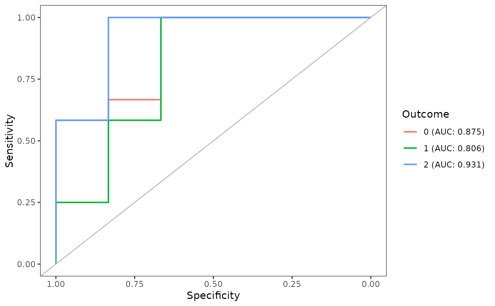

An receiver operating characteristic (ROC) curve is a curve showing the performance of a classification model at all classification thresholds. True ROC can only be computed for two-options, but we can consider each classification, i.e. prediction, correct or incorrect and overlay the curves. Note this means the lines may cover each other and be difficult to see.
Arguments
- trueOutcomes
Vector of the true results
- modelPercents
Data.frame with columns named after the true outcomes, giving the percent of selecting that outcome. This is what is returned predict.RandomForest_PC with type='all' in object
PredPerc[-1](first column is the predictions).
Examples
percents <- data.frame(c(0.980, 0.675, 0.878, 0.303, 0.457, 0.758,
0.272, 0.524, 0.604, 0.342, 0.214, 0.569,
0.279, 0.128, 0.462, 0.098, 0.001, 0.187),
c(0.005, 0.160, 0.100, 0.244, 0.174, 0.143,
0.652, 0.292, 0.040, 0.312, 0.452, 0.168,
0.173, 0.221, 0.281, 0.029, 0.005, 0.057),
c(0.015, 0.165, 0.022, 0.453, 0.369, 0.099,
0.076, 0.084, 0.156, 0.346, 0.334, 0.263,
0.548, 0.651, 0.257, 0.873, 0.994, 0.756))
colnames(percents) <- c('0','1','2')
computePseudoROCCurves(c(0, 0, 0, 0, 0, 0,
1, 1, 1, 1, 1, 1,
2, 2, 2, 2, 2, 2),
percents)

if (FALSE) {
pheno_interactions_subset <- data.frame(
Var1 = rep("Tumor", 11),
Var2 = c(
"Tumor", "CD3T", "CD4T", "CD8T", "B", "DC",
"DCMono", "Macrophage", "MonoNeu", "NK", "Treg"
)
)
pcaData_roc <- getKsPCAData(
data = TNBC_pheno,
unit = "Person",
agents_df = pheno_interactions_subset,
rCheckVals = seq(0, 50, 1)
)
RF_roc <- funkyForest(data = pcaData_roc[-2])
pred_roc <- predict_funkyForest(
model = RF_roc$model,
data_pred = pcaData_roc[-2],
data = pcaData_roc[-2]
)
computePseudoROCCurves(pcaData_roc$Class, pred_roc$PredPerc[-1])
}